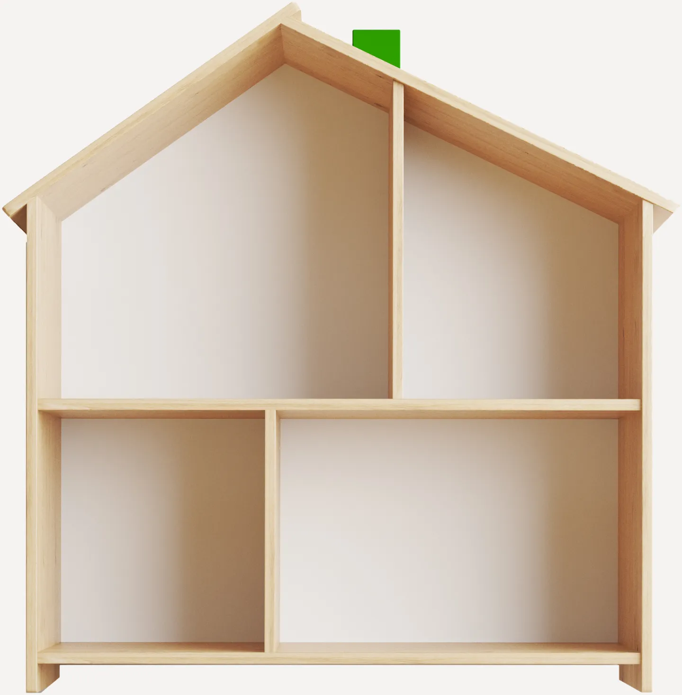
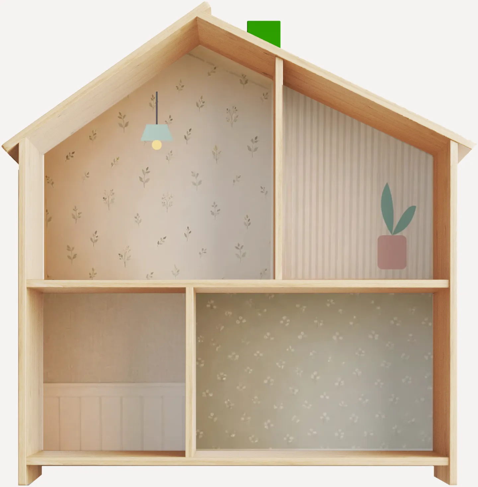

מבית לבן…
לבית שלה
מדבקות ויניל שנחתכו במידה לבית הבובות פליסאט של איקאה
גללי למטה ↓
ויניל מט
יורד בלי סימנים
חתוך במידה לפליסאט
ככה הוא מגיע מאיקאה
0×0
ס״מ, המידה המדויקת של הבית
0
דקות, ובלי כלים

לפני

אחרי
הבית שלה, בעשר דקות
לכל העיצובים